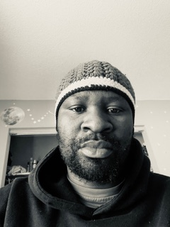

My name is Marcos, I was born in malawi Southern part of Africa. I am a father of three and I have two dogs named Zuwa and Chloe.I am an avid soccer fan.I like to watch and player as well as running a soccer back home where I help elementary and middle school going student by organizing soccer tournaments. I have been supporting Chelsea FC from early stage of my young adult life. Also, I like to go out with the family on Camping trip and hiking .
